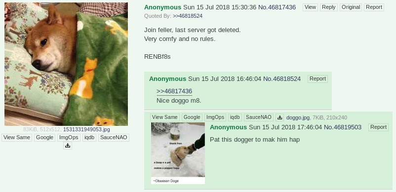
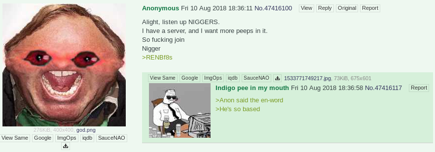
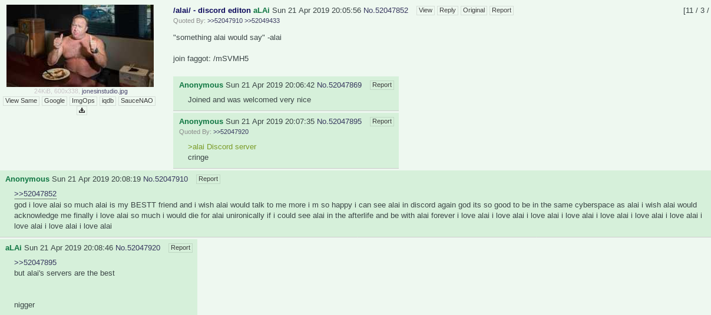
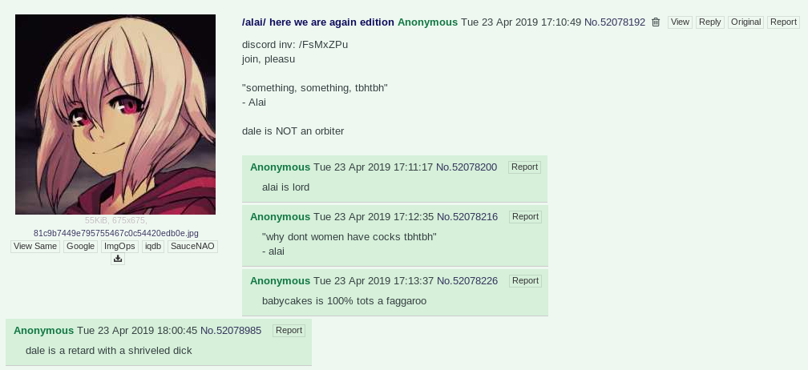
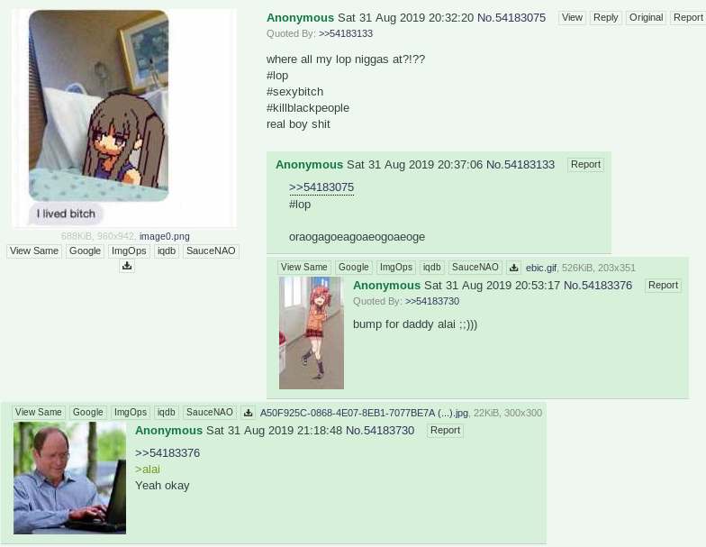
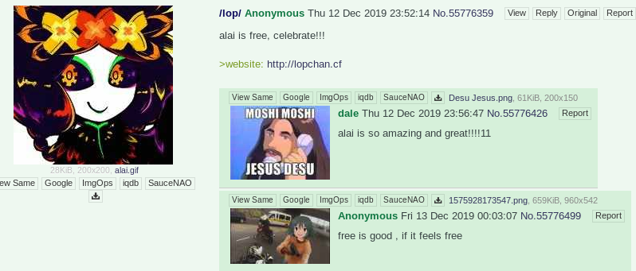
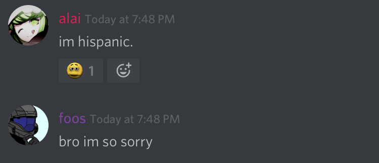
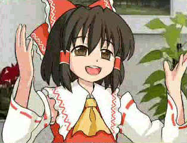

On the 2nd of July, 2017th year of our Lord, Alai posted for the first time on /r9k/. He would post his Discord tag on there trying to make friends or talk, and would continue for the next couple of years. He would eventually get put on "Discord shitlist" threads, which had the tags of people to avoid or that the poster disliked. Alai appearently was active in Gunjy's Discord server, Doom, before it died. Shortly here after, because Alai got upset Gunjy wouldn't add a pensive cowboy emoji, he would make his first server a few weeks before deleting it. The server got filled with a lot of active people in the /r9kcord/ scene, and was also Seven's introduction to /r9kcord/. The server had no roles, only two channels, one with no image perms and one with, but later an extra one for bots was added, and one voice channel. Alai ignored and refused anyone's petition for there to be more channels or roles. He would also post every morning, around 7:00 AM or 8:00 AM, a picture that read "Good... *inhale* MORNING!!" Which would become one of the Lop traditions, along with the limited chanels and little to no roles. Oongi Sploongi would also find Seven here and bring him into the Authority, starting its own saga. It was in this server that Sproocht met Seven after the former posted "Looking for BF" in the chat. She would become Seven's "based Polish e-mum" or just "mum", while he was her "son". Within this proto-Lop there were few people with power, among them: Alai (owner), Crimm and Lain (administrator), and Seven (moderator). Seven somehow gained moderator for borderline simping for Alai, although to him it really was one of the best servers he had joined. "Magical", as he would later call it reminiscing. On the 14th of July, 2018th year of our Lord, Alai had a mental breakdown because his e-gf, Lain, turned out to be a guy, and so he deleted the server. Seven would transform his server, Fishstudy, into a temperory habor for all of the friends he made on Alai's server until he made a new one; because Seven didn't know that there were other /r9kcord/ servers. This would be the first time that Seven was a "keeper of Lop", as it would come to be called. It was during this time that Phil made his appearence in Lop history.
   
On the 21st of April, 2019th year of our Lord, Alai came back from his mental breakdown and made a new server. He named this server Lop, and it became a buzz word he favored for a time; although its meaning was never disclosed to the masses. Among the first to join were, of course, Seven and Crimm. Alai, possibly after seeing what Seven had done with Fishstudy, trusted Seven enough to give him admin alongside Crimm, but only if Seven shilled for the server on /r9k/. So, of course, Seven did what his e-daddy told him, and made the threads and become an admin. Jusky would also appear in this server, usually complaining about how hot his computer made his room. He would try to remedy this by covering his room, including his windows; with tinfoil. Although some suspect this might have turned him room into a microwave or oven, baking Jusky alive. One day somebody posted Jusky's face in the chat and Jusky got really upset, so this gave Seven an idea to collect what little lore there was about Jusky on the server and every image of Jusky from his friends, and make a KnowYourMeme page about Jusky. The page has since been taken down, alongside the Nine page. Other Dale would later accuse Seven of stalking Jusky for the pictures. Babeycakes made his first appearence in this server, at least with that name; with profile pictures of certain women with x's over their eyes. When asked who these women are he would only say, "My victims." Sometime in May of the same year, Alai got put in rehab by his mother for sneakily drinking cough syrup in the bathroom. Shortly after, either he deleted the server or it died. This would come to be known as Alai's years in prison as he would only get access to his phone and the internet in general once a month or so. However, when he did have access to the internet, he would post something in Fishstudy, which had returned to be the temporary server until Alai's return; or make more threads on /r9k/ where he would post the same image with the text "alai and <insert user> sex".
   
On the 12th of December, 2019th year of our Lord, Alai was freed from rehab and returned. When he returned, he made a server and named it Vanity. The first person he brought into it was Seven, saying, "I'm not starting this without you." Seven was asleep when he did this so the following morning, Alai started it. This server broke the mold of Alai's previous servers, having many channels and roles, many of which would become sections on the then future idea of Lopchan. Namely, Quotes and Dream Journal. It was within the #dream-journal channel that Seven would meet his future ex-fiancee, Thirty-Nine, when she posted about a dream she had involving homeless men, which Seven considered himself to look like a "homeless guy". Alai also publically displayed his love for Monaca, from Danganronpa, in this server, after which he spoke to Seven about who the best waifu from Danganronpa is. Alai would later then give ownership to somebody, then forget about the server, letting it die out like the rest of his servers after leaving. After a few months, sometime in May, Alai even left Discord entirely, deleting his account. Nobody knows for sure what happened to him, but the leading theory is this: A thirteen year old girl was sexually harassing Seven, which he didn't like. After a week of her annoying him, he told her that he knew someone else she would like and could sexually harass all she wanted, then gave her Alai's Discord tag. Rumors spread later that Alai had started e-dating this girl and was even going to meet her, right before he left Discord. So the cause of his leaving was probably hiding from the local authorities so he could posibly molest a girl. Either way, Alai will always be remembered and honored as the first keeper of Lop, aswell as its founder.